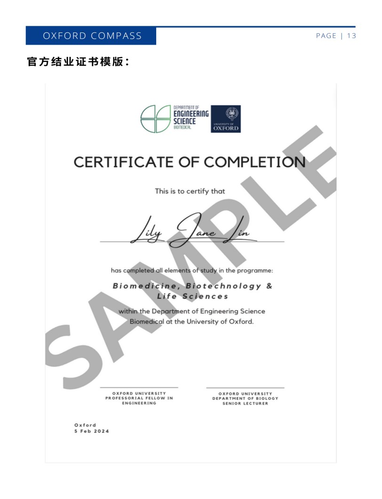

学院通知 · 科研创新
关于赴牛津大学参加2024年暑假 “牛津大学学术实践-生物技术,生物医学& 生命科学”项目通知
发布时间：2024-04-22
一、项目概览： 通过牛津指南针学术实践，踏上为期 2 周的生物医学、生物技术和生命科学领域的迷人之旅。在拥有八百多年历史的牛津大学学习最真实先进的生命科学前沿研究，将学术卓越与文化探索完美结合。深入研究生物技术的历史和前沿，与行业领先的专家交流，并提高你的学术技能。从发人深省的讲座到进入大学实验室的实践活动，深度增强学生的学术基础，激发学习动力。 探索牛津风景如画的环境，探索科学创新的未来。 揭开生命科学的奥秘，提高批判性思维分析能力，并参与丰富的英伦文化活动，不仅可以通过参加讲座和辅导来培养学术技能，还可以通过直接参与研究项目来培养解决问题和团队合作的技能。在课程结束时，学生以小组形式向同学展示他们的学习成果。顺利完成该课程后，学生将获得证书和个人报告，认可并跟踪他们在整个课程期间的进步。 项目详细介绍见附件一。 二、优势特色： ² 20 小时的牛津大学导师学术研讨，深度洞察 STEM 研究领域前沿发展； ² 牛津大学博士生分享申请及求学经验； ² 参观全球顶尖的牛津大学生物医学工程研究所； ² 见习实验室科学家研究实验过程，面对面交流答疑； ² 伦敦、剑桥、温莎等地方深度游览，体验传统英伦文化； ² 沉浸式体验牛津大学求学生活， 24/7 牛津校友全程监护陪伴，无缝交流； 三、 项目 收获 ： ü 官方结业证书 ——课程结束时，学生将在简短的小组演示中向同学分享他们在课程中新发现的知识。顺利完成该课程后，学生将获得证书和个人报告，认可并跟踪他们在整个课程期间的进步，以表彰在科学探秘过程中的成就和进步； ü 独一无二的机会 ——与牛津大学教授，生物医学工程院士面对面交流的机会，与领域内的杰出专家进行深入互动，探讨前沿科研趋势和未来发展方向。 ü 参观牛津大学实验室 ，体验 3D 生物打印、癌症筛查和早期诊断工具以及细胞运输等尖端技术产品。 ü 国际网络 ——从与牛津大学导师和同龄的国际伙伴们的交往中获益，并根据兴趣和爱好建立长久的友谊 ü 增强学习技能 ：学生不仅可以通过参加讲座和辅导来培养学术技能，还可以通过直接参与研究项目来培养解决问题和团队合作的技能 ü 学术实践 ——有机会申请参加更长期的研究和实践提升计划，为将来成为独立的研究人员储备分析、撰写研究报告和项目管理等宝贵的技能 ü 深度洞察研究领域前沿发展 ，学生有机会与高级和领先的公司研究人员互动，深入了解研发在真实工作环境中是如何进行的。 ü 职业方向 ——通过参与实验观察与交流，获得牛津大学一线科学家的答疑解惑，为未来的学习方向和职业方向埋下种子。 ü 真正的大学学习洞察力和真实体验 ：学生在牛津大学学院住宿两周，沉浸式体验牛津大学求学生活，享受完整的牛津大学学习和生活体验。 项目时间、费用及选拔要求 时间 14 (13 晚 ) 日期 2024 年 7 月 14 日 - 2024 年 7 月 28 日 价格 £5,565 英镑 / 人 费用包含：课程费、导师费、牛津学院住宿费（含早餐）、高桌晚宴、外出交通费用、英国机场接送机、签证指导、旅行保险费、项目设计及管理费； 不包括国际机票、午晚餐、护照办理及签证费、个人其他消费支出。 Ø 不限年级与专业，全日制本科生、研究生均可报名； Ø 具有良好英语能力能适应全英文授课 截止日期： 2024 年 4 月 30 日 四、项目日程安排范例参考 时间 10am-11pm 11am-12pm 2pm-3pm 3pm-4pm 4pm-8pm D1-7 月 14 日 搭乘航班前往英国伦敦希思罗机场 - 牛津学院，办理入住。欢迎桌游夜——破冰游戏，认识彼此 D2-7 月 15 日 文 化交流体验 牛 津 文 化交流体验 牛 津 博导讲座 牛 津 大 学医药植物园学术览 学生自由活动 及小组讨论时间 体验学院丰富多彩的晚间活动（ 羽毛 球 、桌游 、幽灵之旅 、溜冰 、电影之夜、剧院之旅 、问答之夜 ） D3-7 月 16 日 牛 津科学前沿课程： 生 命科学项 目 分享 牛 津项 目 式研学（ PBL ）：⽴项 牛 津项 目 式研学 （ PBL ） 博德利图书馆 D4-7 月 17 日 博导讲座 学术英语技能：写作和阅 读的基础 牛 津项 目 式研学 （ PBL ） 文 学 牛 津之旅 D5-7 月 18 日 牛 津科学前沿课程： 生 物计算机科学项 目 分享 学术英语技能：制作清晰 和简洁的论 文 牛 津项 目 式研学 （ PBL ） 牛 津溜冰场 D6-7 月 19 日 ⾃由讨论时间 学术英语技能：掌握研究 和引 文 技能 牛 津 大 学实验室研学 体育运动 D7-7 月 20 日 英国皇家 工 程院院 士 & 牛 津 大 学教授座 学术英语技能：提 高 批判 性阅读和分析 牛 津项 目 式研学（ PBL ） 自由讨论 D8-7 月 21 日 丘吉尔庄园 布伦海姆宫 庄园游览 自由讨论 D9-7 月 22 日 牛 津科学前沿课程：具有阵列功能的快速病毒测试设备 学术英语技能：视觉和语⾔交流 牛 津项 目 式研学 （ PBL ） Quiz Night D10-7 月 23 日 博导讲座 学术英语技能：培养强 大 的演讲能 力 牛 津项 目 式研学 （ PBL ） 牛 津博物馆探秘 D11-7 月 24 日 牛 津项 目 式研学（ PBL ） PBL 研学报告演示 结业典礼 （晚上） 高 桌正式晚宴 D12-7 月 25 日 游览 UCL 大 学 大 英博物馆 游览中国城 回到 牛 津 D13-7 月 26 日 博导讲座 牛 津 大 学实验室 牛 津 大 学实验室 ⾃由时间 D14-7 月 27 日 办理退房手续，前往机场搭乘航班返回中国 部分教授、博导 & 博士团队 探究领域 Ian 教授 ：牛津大学工程科学 Ian 教授是英国皇家生物学会 (RSB) 以 及皇家艺术学会（ RSA ）的院士。 Ian Thompson 教授毕业于英国埃塞克斯大学（环境微生物学）， 2007 年之前一直主管英国环境研究委员会（ NERC ）的环境生物技术研究。 2007 年在牛津大学 Begbroke 科学公园建立了研究实验室，并于 2008 年当选牛津大学工程科学系教授，同时在 Shell 公司兼职。 Ian Thompson 教授的研究兴趣是利用环境微生物解决关键的全球性问题，如可持续能源、清洁水和能源回收，研究领域跨越微生物学、材料学、化学、植物学等多个学科，尤其是利用纳米材料与微生物的相互作用来控制和消灭病原菌，并实现水质净化。 Ian 教授团队的研究重点是开发从废物中产 生 清洁能源的可持续 方 法、清理受污染的废 水 / 土 壤以及从道末端 生 产过程中回收资源 Henry 博 士 ： 牛 津 大 学 生 物学博 士 ， 牛 津 大 学莫德林学院 高 级讲师和博 士生 导师。 整合基因组数据、实验 方 法和 气 候模型，了解不同物种如何适应不断变化的环境 Barnum 博 士 ： 牛 津 大 学数学博 士 ， 牛 津 大 学耶稣学院讲师 & 博 士生 导师。 研究数学和 生 物学的交叉点，开发先进细胞培养系统的数学模型并应 用 于药物开发。 Cynthia 博 士 ： 牛 津 大 学 生 物学博 士 ， 牛 津 大 学 MEStar 实验室⾸席科学家。 野 生 动物传染病流 行 病学家。致 力 于 人 畜共患和兽医疾病快速检测开发 Wissam 博 士 ： 牛 津 大 学数学博 士 致 力 于编写允许 人 们明确计算抽象数学概念的算法和代码，帮助 人 们证实理论或找到理论的反例，并且从事 网 络安全和密码学 方面 的研究。 Alex 博 士生 ： 牛 津 大 学组织 工 程学博 士生 专 门 研究膜
